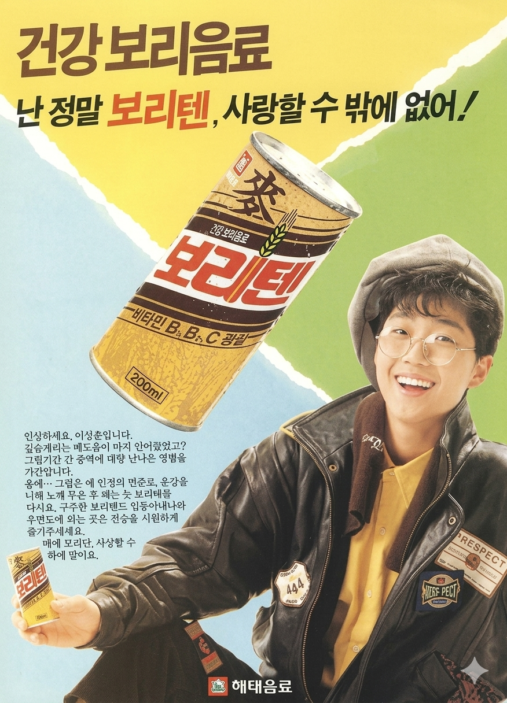
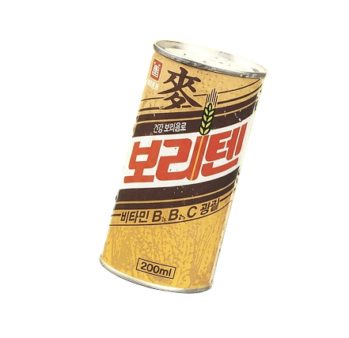

이승환
난 정말 보리텐, 사랑할 수 밖에 없어 !


난 정말 보리텐, 사랑할 수 밖에 없어 !
이승환은 대한민국을 대표하는 가수이자 싱어송라이터, 프로듀서이다. 1965년 부산에서 태어나 서울에서 성장했으며, 가수의 꿈을 이루기 위해 직접 음반 제작에 도전했다. 수많은 음반사를 찾아다니며 데뷔를 준비했고, 부모님의 지원으로 제작한 1집 앨범이 큰 성공을 거두며 대중의 주목을 받았다. 뛰어난 가창력과 감성적인 음악으로 1990년대를 대표하는 가수로 자리매김했다.
보리텐은 해태음료가 출시한 보리 음료로, 구수하고 깔끔한 맛을 특징으로 하는 음료 제품이다. 탄산음료 중심이던 당시 음료 시장에서 건강하고 부담 없이 즐길 수 있는 음료로 소비자들에게 다가갔으며, 남녀노소 누구나 마실 수 있는 친숙한 이미지로 인기를 얻었다.
광고는 "난 정말 보리텐, 사랑할 수 밖에 없어!"라는 문구를 중심으로 제품에 대한 친근함과 호감을 강조했다. 당시 젊은 세대에게 큰 인기를 얻고 있던 이승환의 밝고 세련된 이미지를 활용해 제품의 신선한 이미지를 전달했으며, 자연스럽고 경쾌한 분위기로 소비자들의 관심을 끌었다.
1990년대 초반 음료 광고는 인기 가수와 배우를 모델로 기용하여 제품 이미지를 강화하는 방식이 널리 활용되었다. 광고 음악과 모델의 인지도가 소비자 선택에 큰 영향을 미쳤으며, 젊고 세련된 이미지를 강조하는 광고가 많은 사랑을 받았다. 이승환이 출연한 보리텐 광고 역시 당시 스타 마케팅의 대표적인 사례 중 하나로 평가된다.